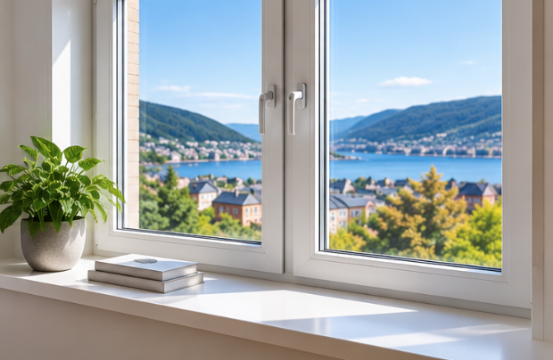

Vinduer og ytterdører
Gamle vinduer og dører kan slippe ut mye varme. Energieffektive vinduer og tette ytterdører kan redusere trekk og gjøre det enklere å holde en jevn temperatur inne.
Dette bør du undersøke
- Om det trekker rundt karmene.
- Om glasset eller rammen er skadet.
- Vinduets U-verdi og isolasjonsevne.
- Om tetningslistene bør skiftes.